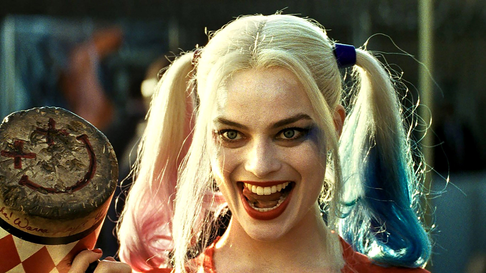
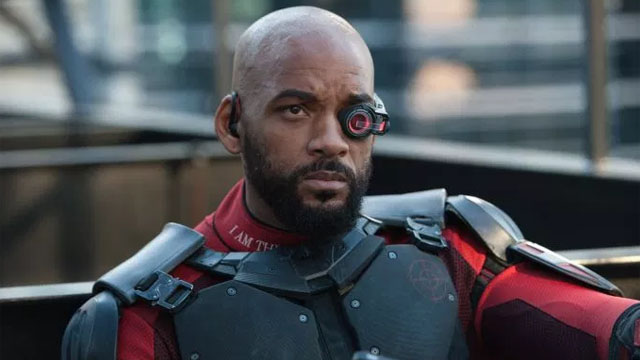
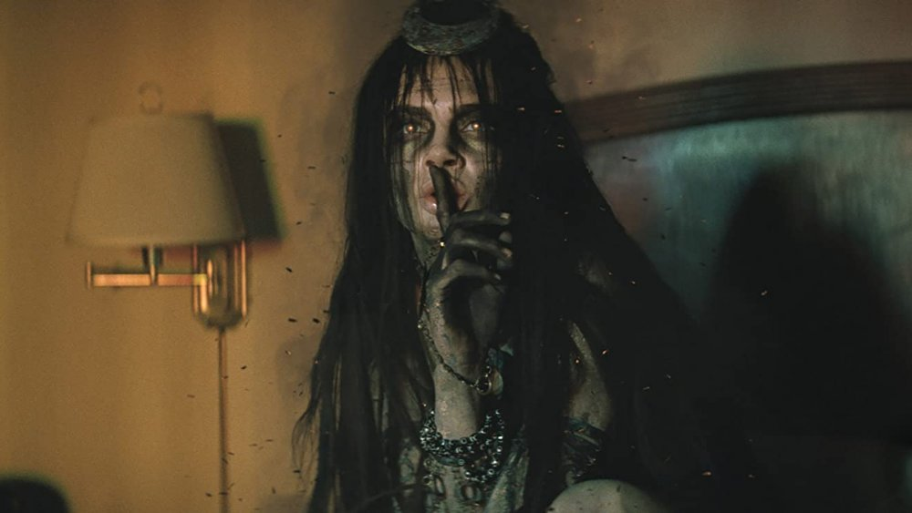
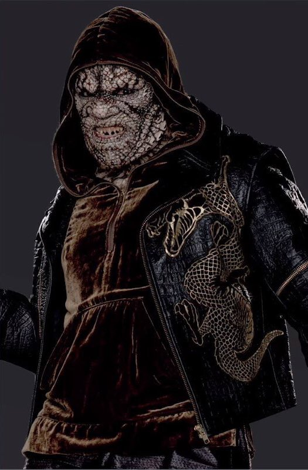
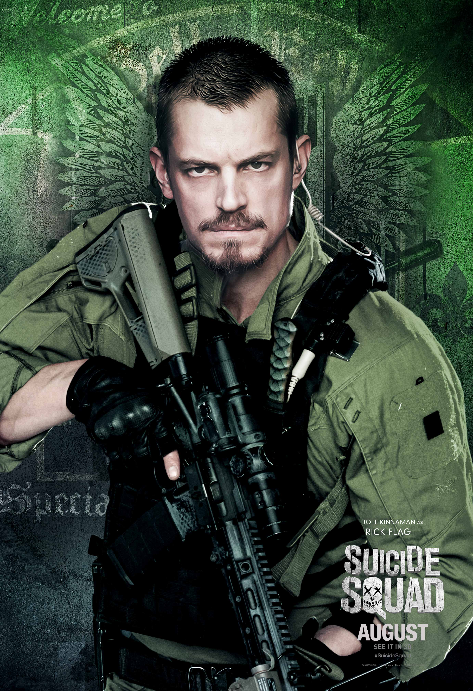
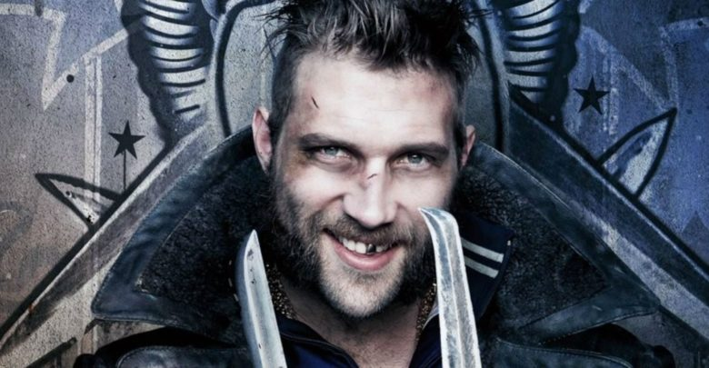
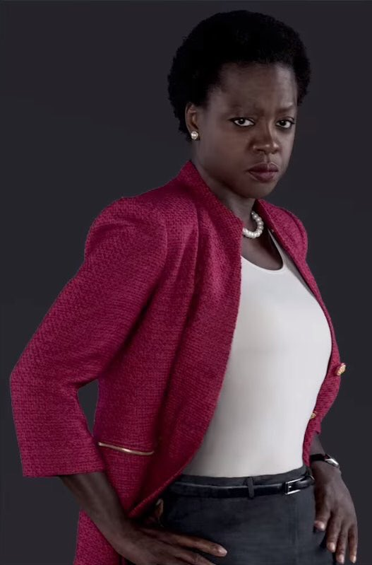
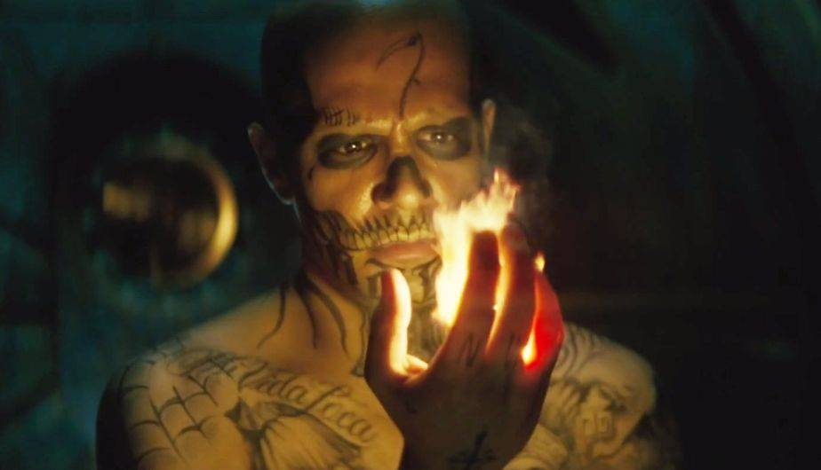

Los peores villanos de las cárceles y hospitales psiquiátricos, todos poseedores de cualidades especiales, son liberados por el gobierno para conformar un equipo de luchadores de élite y detener a una misteriosa y poderosa entidad. Mientras tanto, el Joker actúa por su cuenta, sembrando el caos a su paso.

Harley Queen es un personaje complejo, ya que su historia es compleja.
Su inico fue como terapeuta en un manicomio, tocándole el caso del Guason, quien la estaba manipulando mentalmente sin que se diera cuenta, siendo transformada asi en la “villana loca” que es ahora. Aunque en esta película es lo contrario, volviéndose asi una de las salvadoras, junto con otro grupo de villanos, de esta historia.
Junto su escuadrón son obligados a ir a una misión, en la cual parece que no van a volver, dándole asi el nombre de escudron suicida

Deathshot es un franco tirador experto, que sabe manejar cualquier tipo de pistola. Tiene una puntería impecable, pudiendo así matar a cualquiera de cualquier ángulo.
Empezó con eso por dinero, manteniendo a su familia de lado, hasta que es capturado. Su mayor tesoro es su única hija, de la cual el quiera que se sienta orgullosa de su padre. Uniéndose así al escuadrón suicida.

Enchantress es una bruja de miles de millones de años, la cual veneraban los antiguos seres humanos.
Pero ahora por la falta de energía por haber estado encerrada necesita un cuerpo del cual alimentarse, el cual fue de una doctora que exploraba la cueva en la que estaba, pudiendo tomar su cuerpo.
Para hacer que la veneraran otra vez y ser la reina desata un caos, matando y teniendo un ejercitico de humanos transformados solo para servirle a ella.

Es un ser el cual se ve como mounstro y por ser tratado como tal por los demas, fue adaptando esa postura.
Le gusta vivir en las acantarillas, y come carne cruda. No habla mucho y cuando lo hace dice frases cortas.
Cuando sale a la superficie le gusta ponerse una chamarra con gorro, para intentar cubrir un poco su rostro. Es peligroso tratar con el ya que no le gusta que la gente lo vea o se le acerque.

Uno de los mejoress militares, al cual le asiganron el caso de cuidar Enchantress, y termino enamorado de la cientifica que controkla esta, que termino controlando la Doctora y Especialista Amanda Waller.
Cuando enchatress se escapa, toma liderasgo del escuadron sucida para inetentar salvar a su amada de la echisera que la controla. Aunque no sabia si iba lograrla salvar o la iba a terminar matando junto con Enchantress.

Es un ladron al cual le gusta trabajar solo, su mejor arma son los boomerangs, de ahi su nombre.
Este personaje tiene una gran aficion por los unicornios, y siempre carga uno de peluche en uno de sus bolsillos de su chamarra.
Este es uno d los personajes mas "carismaticos".

Amanda Waller, la genio militar especialisada, responsable de crear al escuadron sucida.
Su plan, consistia en un equipo que pueda enfrentarse en cualquer guerra de ser necesarios. Este proyecto fue rechasado por varios años, hasta que surge la situacion perfecta para ponerlos en prueba, prueba de la cual tal vez no iban a volver.

Chato Santana, mejor conocido como el Diablo.
Su nombre se debe devido a que el puede prenderse y controlar el fuego, y dice el que el mismisomo diablo de dio esa maldicion.
No le gusta usar sus poderes ya que por estos perdio a sus familia, y por que le es dificil controlarse una vez que empieza. Esto lo ha hecho antisocial, alejando a todos los que se le acercan.
Derechos recervados a Valeria Quiroz Brambila, Sophie Galvan Alejandra Cosio, Jaydy Jay Fuentes ©